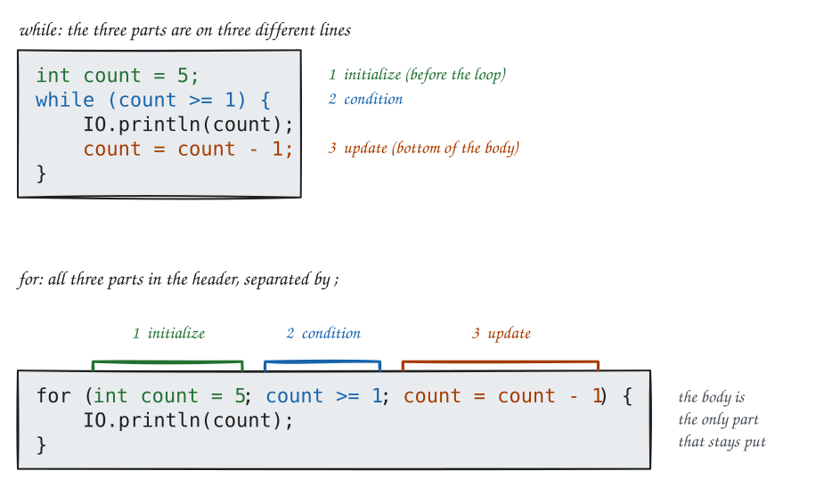

for LoopsCOSC120: Introduction to Computer Science I
By the end of this lecture, you’ll be able to:
for loop and identify its three parts: initializer, condition, and updateforfor loop with if/else inside the body to filter or classify valueswhile and for loops for the same problemwhile and for for a given problem and justify the choiceLast lecture we wrote this countdown:
The three parts (initialize, condition, update) are spread across three different places.
Java has a second kind of loop that keeps all three in one line.
for Loop
= 1) { IO.println(count); count = count - 1; }. The first line is green and labeled '1 initialize (before the loop)', the while line is blue and labeled '2 condition', and the line count = count - 1; is orange and labeled '3 update (bottom of the body)'. Bottom, titled 'for: all three parts in the header, separated by ;': the code for (int count = 5; count >= 1; count = count - 1) { IO.println(count); }. Inside the header, int count = 5 is green with a bracket labeled '1 initialize', count >= 1 is blue with a bracket labeled '2 condition', and count = count - 1 is orange with a bracket labeled '3 update'. A gray note beside the for box reads 'the body is the only part that stays put'." width="780" class="r-stretch">Same result. Same three parts, moved into the header. Only the body stays where it was.
for Executes: The OrderJava follows this exact sequence:
int i = 1i <= 3. If true, run the body; if false, the loop is over.IO.println(i)i = i + 1The update happens after the body and before the next condition check. Like while, the condition is checked first, so if it starts out false the body runs zero times.
for Loopi at the check |
i <= 4? |
Output | i after update |
|---|---|---|---|
| 1 | true | Step 1 |
2 |
| 2 | true | Step 2 |
3 |
| 3 | true | Step 3 |
4 |
| 4 | true | Step 4 |
5 |
| 5 | false | (loop exits) | — |
Same variable table as for while: the loop mechanics are identical, only the syntax changed.
i++i = i + 1 is so common that Java has a shorthand:
| Long form | Shorthand |
|---|---|
i = i + 1 |
i++ |
i = i - 1 |
i-- |
Note
count++; is a complete statement on its own, so you can use it anywhere (for example inside an if). Just don’t put it inside a bigger expression like x = i++ * 2 for now: what that does is easy to get wrong.
forSum of 1 through 10:
Output:
Sum: 55Product of 1 through 5 (that’s 5!, “5 factorial”):
Output:
5! = 120Same accumulator pattern as Lecture 11: the initialize, condition, update just moved into the for header.
for with if InsideCount how many numbers from 1 to 20 are divisible by 3:
Output:
Divisible by 3: 6i % 3 == 0 means the remainder is 0, so i divides evenly by 3 (% is from Lecture 3).if filters: the loop visits every value, but only some of them update the counter.while vs for: Same ProgramWith while:
Both print 1 through 5. They are interchangeable: any for can be written as a while and vice versa. The choice is about clarity.
| Situation | Prefer |
|---|---|
| You know how many iterations you need | for |
| You’re counting or stepping from A to B | for |
| You’re waiting for user input or an event | while |
| The stop condition depends on what happens inside the loop | while |
Sentinel loops (“repeat until the user types quit”) |
while |
Rule of thumb: if you can write all three parts (init, condition, update) before you know what the body does, use for. If the body has to run to find out whether to stop, use while.
forOutput:
Multiplication table for 7:
7 x 1 = 7
7 x 2 = 14
7 x 3 = 21
7 x 4 = 28
7 x 5 = 35
7 x 6 = 42
7 x 7 = 49
7 x 8 = 56
7 x 9 = 63
7 x 10 = 70for fits: we always want exactly 10 rows, known before the loop starts.(n * i) make it clear the multiplication happens first, and the number is then joined to the text.Warning
Commas instead of semicolons for (int i = 0; i < 5; i++): the three parts are separated by ;, not ,.
Warning
Off-by-one (again) Starting at 0, i < 5 runs 5 times (i = 0 to 4) and i <= 5 runs 6 times (0 to 5). Trace the last iteration.
Warning
Changing the loop variable inside the body Changing i in the body as well as in the update makes the loop very hard to reason about. Keep all updates in the update slot.
for (initialize; condition; update) puts all three loop parts in one header, separated by ;.false.i++ and i-- are shorthand for adding or subtracting 1.for as in a while.for when you know the count in advance; use while when you wait for an event (like a sentinel).for header disappears after the loop.Problem 1 — Write it. Write a for loop that prints every even number from 2 to 20, one per line.
Expected output: 2, 4, 6, … 20, one per line (10 lines).
Problem 2 — Write it. Use a for loop to compute the sum of squares from 1 to 10: 1² + 2² + 3² + ... + 10²
Expected output:
Sum of squares: 385Problem 3 — Convert it. Rewrite this while loop as an equivalent for loop, then run both and check they print the same thing.
Problem 4 — Write it. Use a for loop to count how many integers from 1 to 100 are divisible by both 3 and 5.
Expected output format (fill in the number):
Divisible by 3 and 5: ?Problem 5 — Trace it. On paper, fill in a variable table (i, result) and predict what this prints. Then run it to check.
Problem 6 — Choose. Which loop would you use for each scenario, while or for? Explain briefly.
n, where n is given as a parameter.